Participant 1
Initial description: I thought the rule was to copy the same pattern as example input 4 to example output 4
Final description: I thought the rule was to copy the input pattern as example 3 but it wasn't.
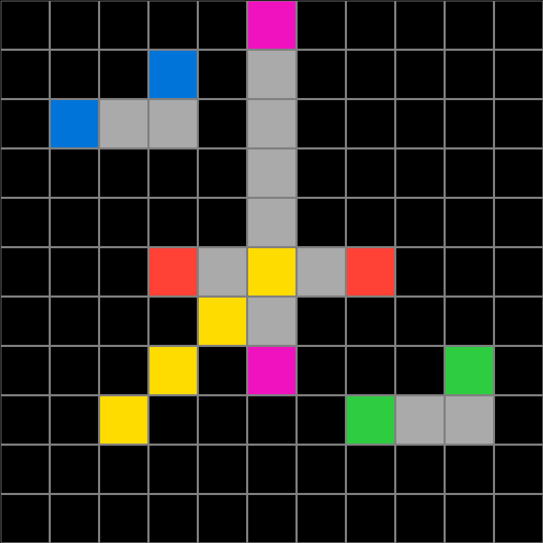
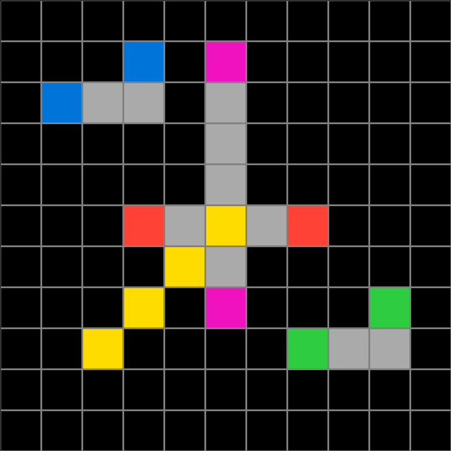
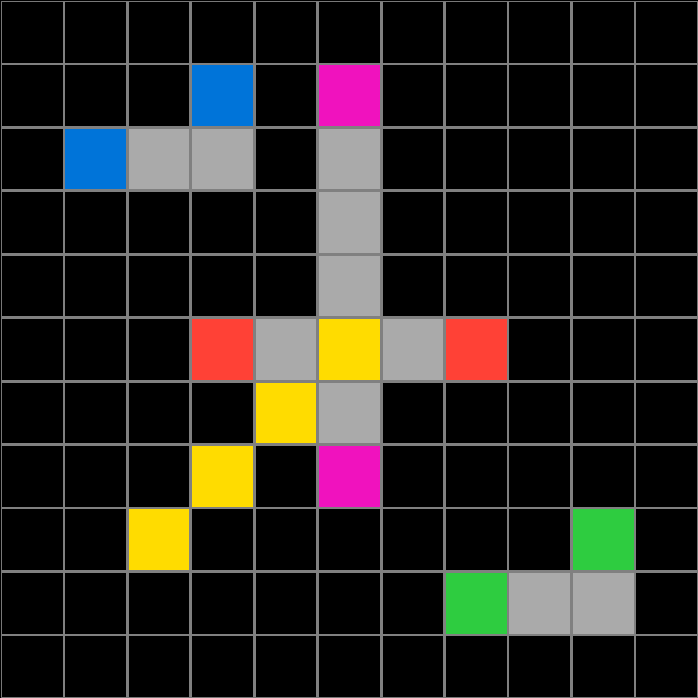
Participant 2
Initial description: I am trying to go with the first example output.
Final description: I am trying to go with the first example output.
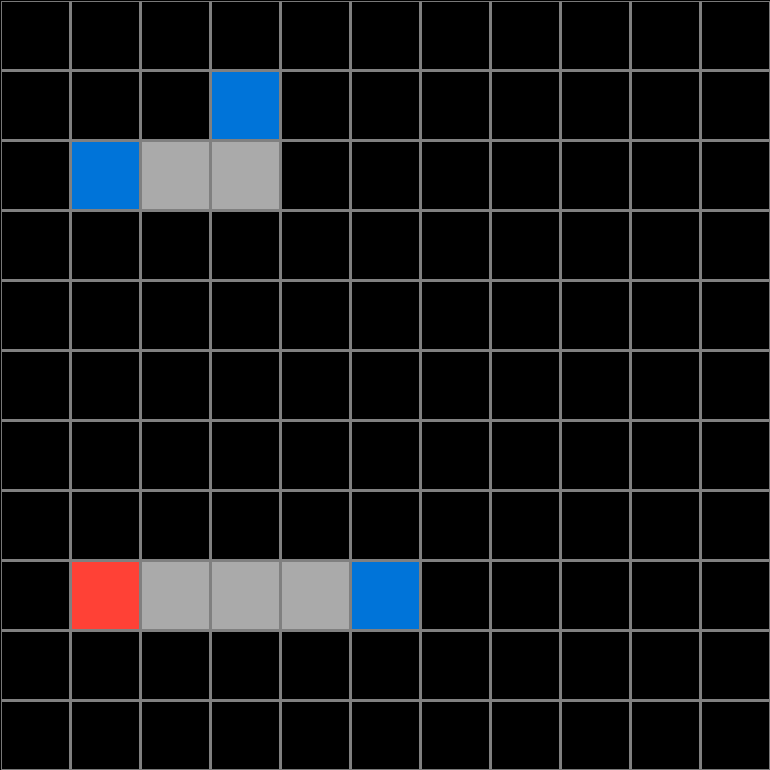
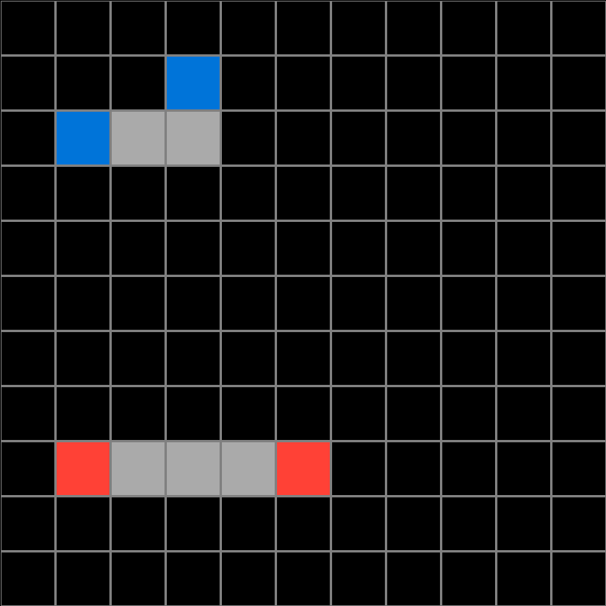
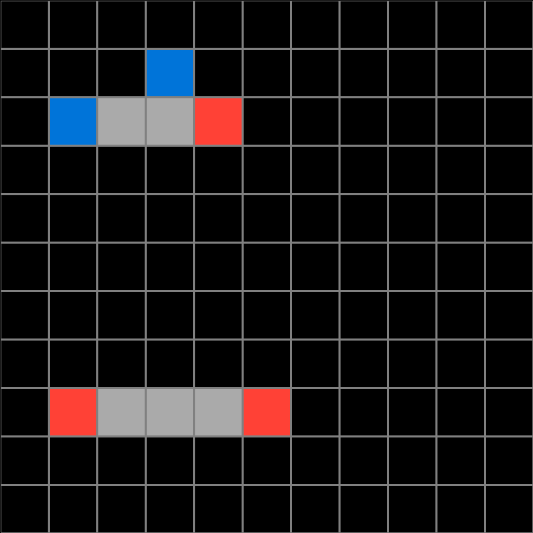
Participant 3
Initial description: I reflected the color and connected it with gray. If two gray lines intersected, I made a yellow diagonal line.
Final description: I was really confused on this one and was not able to detect a pattern.
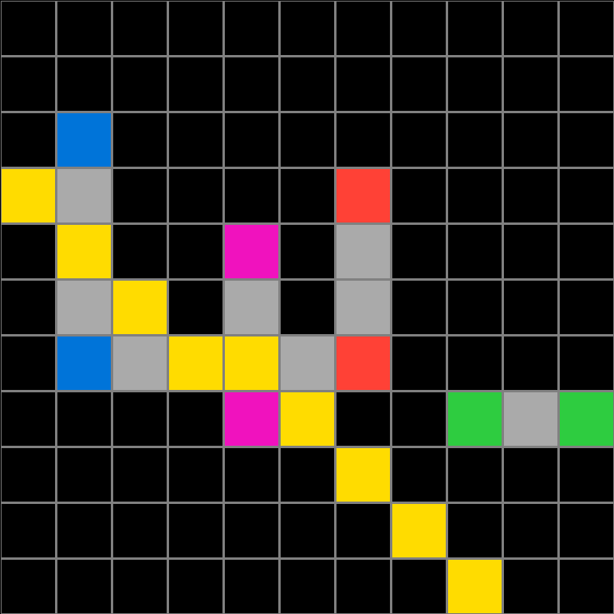
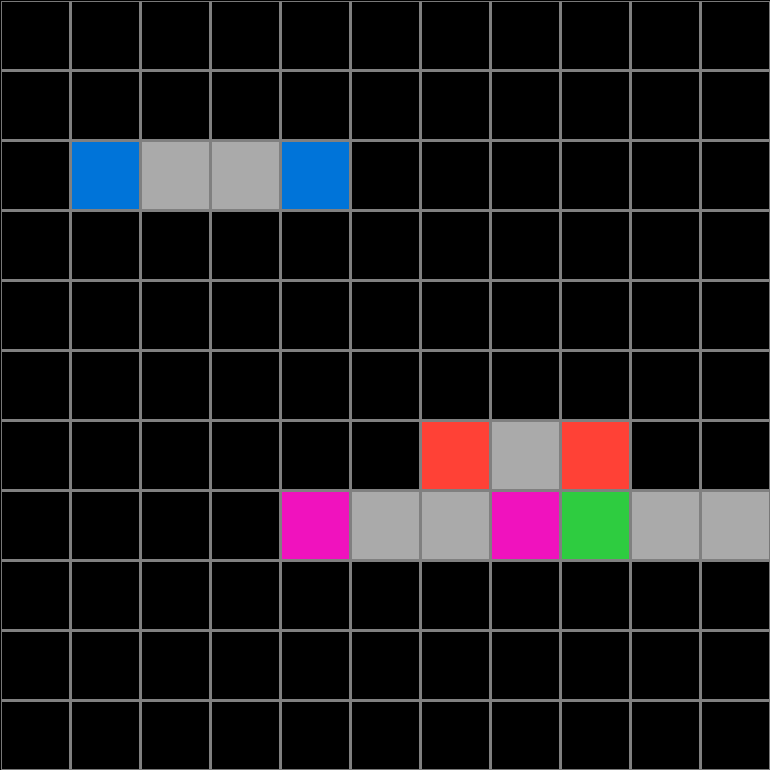
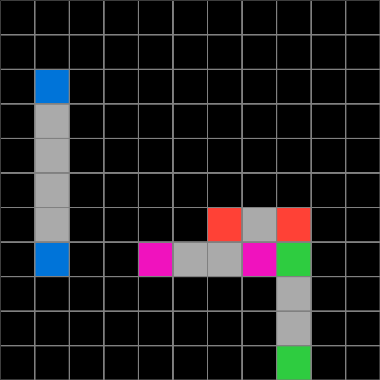
Participant 4
Initial description: Blue square adds two gray squares to its east and another blue square to the north of second gray square. Red square adds three gray squares and a single red square to its east or west, depending on which side of the output grid it can fit into. Green square adds two gray squares to its south and another green square to the south of second gray square. Pink square adds five gray squares and one pink square to either its north or south, depending on which side of the output grid in can fit into. If any of the output patterns overlap, their overlapping square must be yellow with a series of yellow squares diagonally to the southwest, all the way to the edge of the grid.
Final description: Blue square adds two gray squares to its east and another blue square to the north of second gray square. Red square adds three gray squares and a single red square to its east or west, depending on which side of the output grid it can fit into. Green square adds two gray squares to its south and another green square to the south of second gray square. Pink square adds five gray squares and one pink square to either its north or south, depending on which side of the output grid in can fit into. If any of the output patterns overlap, their overlapping square must be yellow with a series of yellow squares diagonally to the southwest, all the way to the edge of the grid.

Participant 5
Initial description: Using the test input placement add grey squares and cap with the same color from start.
Final description: I used the example: blue added two grey and blue on top of last grey, pink is five grey capped with pink, orange three grey orange, green two gray the green. I don't know where the yellow comes in.
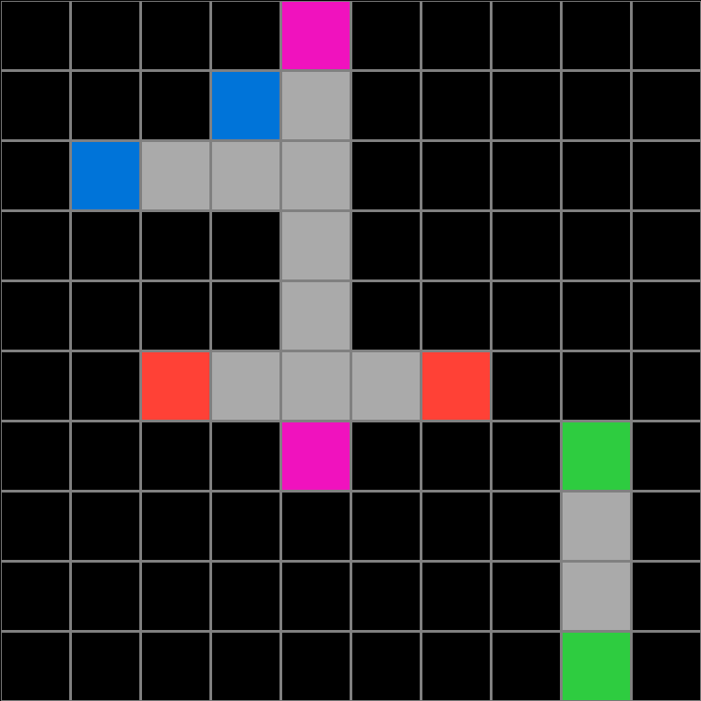


Participant 6
Initial description: Blue makes a gray trail of two over one up to a new spot. Red moves 4 spaces to the left with a gray trail. Pink moves 6 spaces up with a gray trail. Green moves 3 spaces down with a gray trail.
Final description: I thought the rule was that blue moves two over and one up. Pink moves 6 spaces up, green moves two spaces down, and red moves 4 spaces to the left.
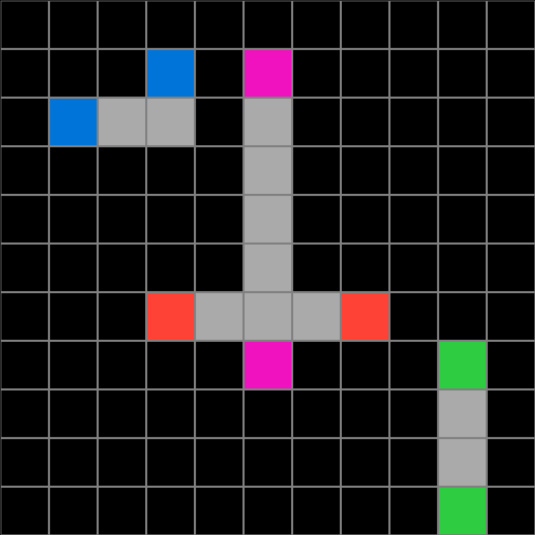
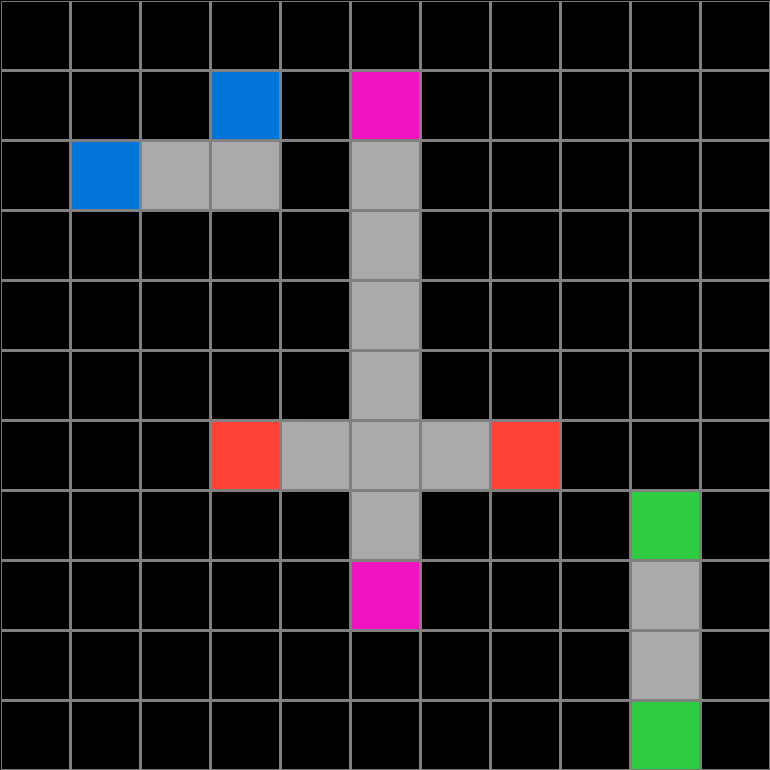

Participant 7
Initial description: Just follow the grid, I guess. Blue is two grey to the right with blue atop. Pink has 5 vertical grey blocks between. Red with three, green with two. Follow the pattern.
Final description: I cannot fathom any other solution and I am tired of wasting my time.

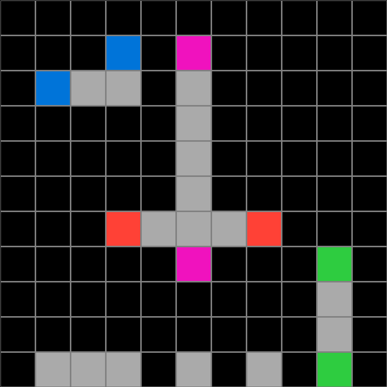
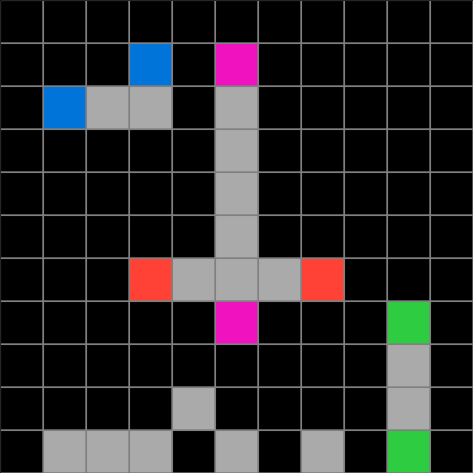
Participant 8
Initial description: I had to look at the colors and what direction they went. If two colors intersected, it formed a yellow diagonal line.
Final description: I thought you needed to look at the color of the block. Then look at how the output was. It seemed like the blocks behaved a specific way each time. For example, the red blocks output was 5 to the left.
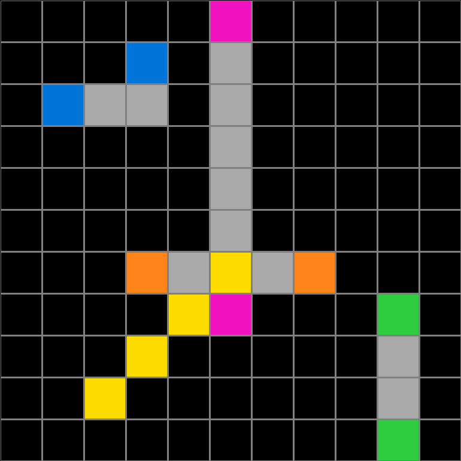
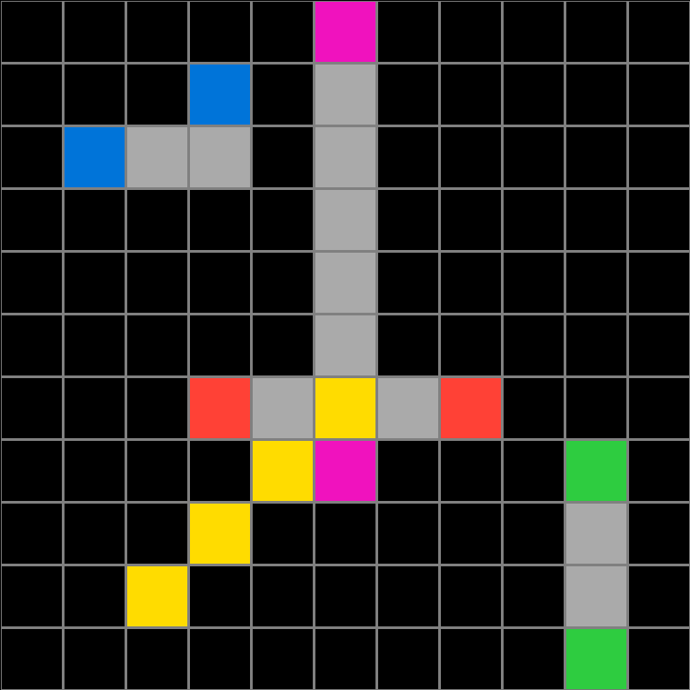
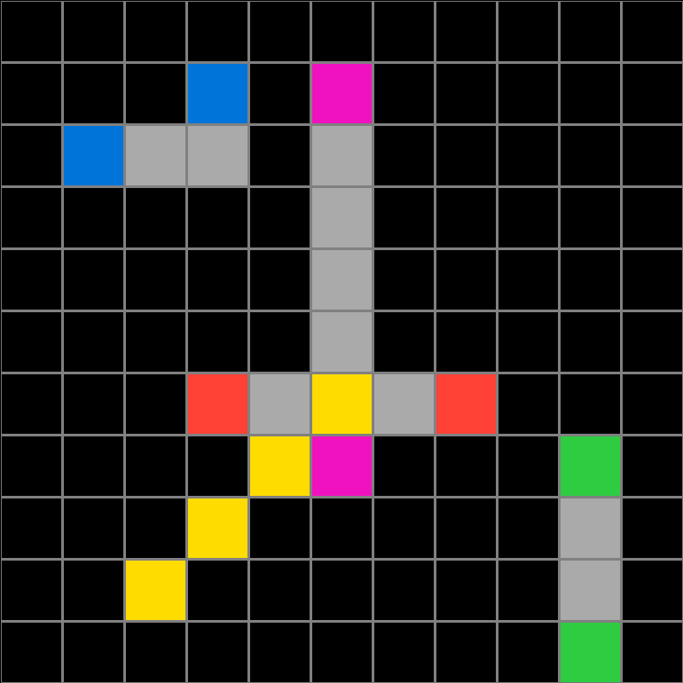
Participant 9
Initial description: if the square is blue, add two grey to the right and then a blue up on. If it is green, add two grey down and then another green. if it is red, add three grey to the left then another red. if it is pink, add 5 grey up and another pink. if two grey squares intercept then make it yellow and carry yellows diagonally down and to the left until it reaches the edge.
Final description: if the square is blue, add two grey to the right and then a blue up on. If it is green, add two grey down and then another green. if it is red, add three grey to the left then another red. if it is pink, add 5 grey up and another pink. if two grey squares intercept then make it yellow and carry yellows diagonally down and to the left until it reaches the edge.

Participant 10
Initial description: Blue shape goes right 2 up 1, green goes down 3, red goes left 4, pink goes up 6. Red and pink intersect, so the intersection turns yellow and forms a yellow line going southwest of where it originates until it hits the edge of the grid.
Final description: Blue shape goes right 2 up 1, green goes down 3, red goes left 4, pink goes up 6. Red and pink intersect, so the intersection turns yellow and forms a yellow line going southwest of where it originates until it hits the edge of the grid.

Participant 11
Initial description: After matching the height and width, you would place the same input as the ouput. You would then match up the output with the examples given. One green square would involve 2 green squares placed downard and vertically ending with another green square. One blue square would involve 2 gray squares to the right horizontally, 1 gray square upward vertically, ending with a blue square. One pink square would involve 5 gray squares vertically upward ending in an another pink square. One red square would involve 3 gray squares to the left horizontally ending with another red square. And any overlap would involve a yellow cross line in a downward and to the left direction and the site of the overlap.
Final description: After matching the height and width to the input and placing the correct colored squares as given, you would follow along with the examples given in the inputs. A blue square would involve 2 gray squares to the right and one blue square upward. A green square would involve 2 gray squares downward ending in another green square. A red square would involve 3 gray squares to the left ending in another red square. A pink square would involve 5 gray squares upward ending in another pink square. Any overlap would involve yellow squares in a downward checkerboard direction to the left at the site of the overlap.
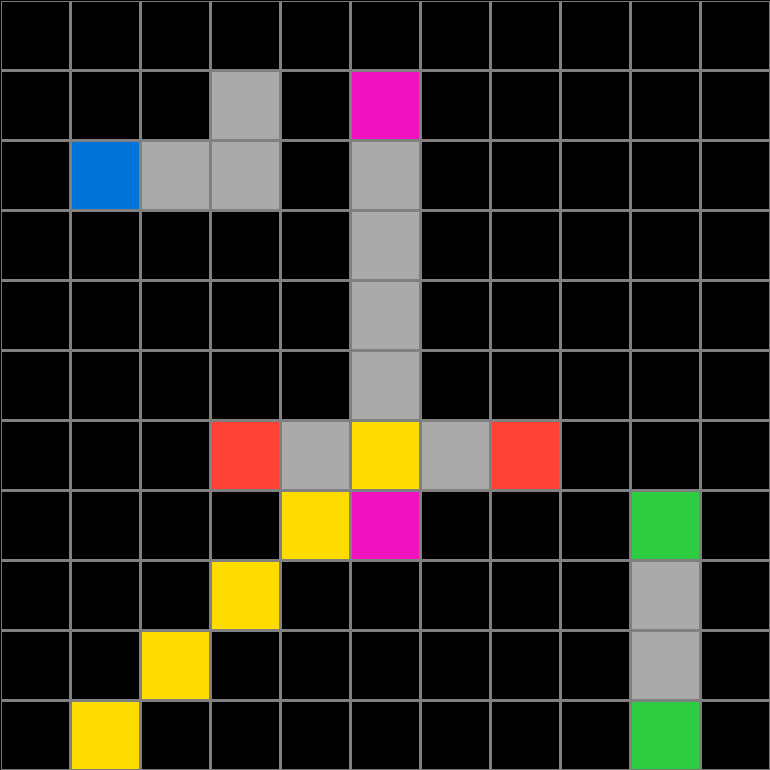
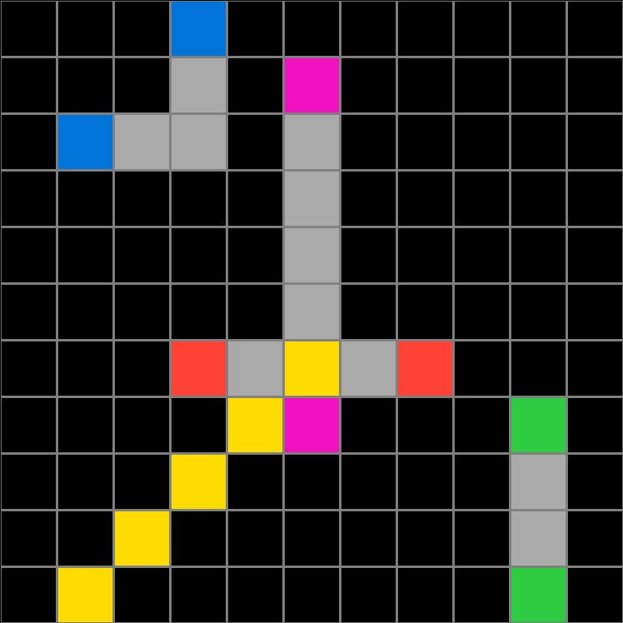
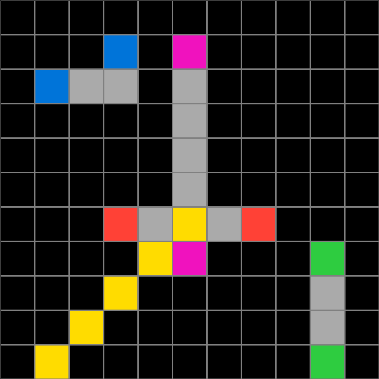
Participant 12
Initial description: The rule was to turn blue into a 4 squared "L" shape on it's side, green into a 4 block vertical line, orange into a 5 block horizontal line, and pink into a 7 block vertical line
Final description: Make a blue 4 block "L" shape extending to the right from it's starting point, laying on it's side. Make a 7 block, pink upward vertical line, a 4 block downward line, and a 5 block orange horizontal line. Each shape is connected by grey squares except for the yellow line, which uses only yellow blocks, and the yellow line always starts in the center spot on the orange line, and decends diagonally down and to the left. until it reaches the edge.